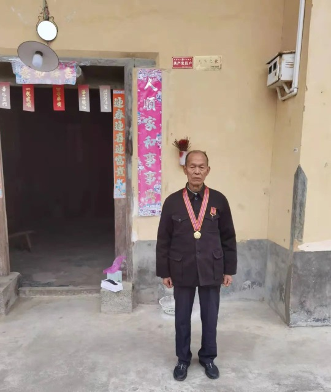

春节时上演的《长津湖之水门桥》电影触发了全国观众的泪点，电影里那一幕幕可歌可泣的战争场景，让全国人民为70多年前在艰苦卓绝的环境当中不畏牺牲，迎着炮火前进的志愿军战士而流下热泪。而在大余县，一位曾经在抗美援朝战场上奋勇杀敌的老战士却在医院与病魔进行顽强的斗争！
这位老战士名叫陈家财，1932年出生，大余县内良乡人。
（陈家财与爱人）
陈家财幼年丧父，从小在内良的大山之中锻炼了他强健的体魄，中国人民解放军东江纵队赣粤湘支队经常在内良一带活动，陈家财那时就经常充当游击队的小情报员，在大余全面解放后，陈家财接受革命影响加入了政府的土改队工作。
陈家财幼年丧父，从小在内良的大山之中锻炼了他强健的体魄，中国人民解放军东江纵队赣粤湘支队经常在内良一带活动，陈家财那时就经常充当游击队的小情报员，在大余全面解放后，陈家财接受革命影响加入了政府的土改队工作。
1950年10月，朝鲜战争爆发后，国内迅速征集兵源，此时正在内良区尧扶乡如火如荼开展土改工作，担任民兵队长的陈家财听到消息之后，毅然响应政府发出的“党员干部先报名参军”的号召，应征入伍加入到了抗美援朝的行列。当时内良区共有四名青年一起通过了体检与政审，他们从内良步行出发到达县城集合，大余县本次前往抗美援朝的战士共计100人。队伍步行前往新城住了一晚，在南康住了一晚，第三天到达赣州休整。之后在赣州集合乘船到达清江县（现樟树市），在那住了几个晚上后，才登上火车，前往上海。
到达上海嘉定县（现嘉定区），所有人分开进行训练，主要是训练射击与掷弹。集中训练了几个月之后，部队一声令下准备开拔前往朝鲜。此时身上的军服与军帽所有标志由原来的中国人民解放军全部换成中国人民志愿军标识。而此时面对即将上战场，陈家财回忆还是有极少数的人畏惧上战场而选择当逃兵。
陈家财没有丝毫退缩，随同部队乘坐火车经过数省之后，跨过鸭绿江进入朝鲜境内，不过那时从国内到达边境，都有空军的飞机掩护，以防美国飞机窜入国内对军列进行袭击。
陈家财回忆自己到达朝鲜时，地面的积雪非常厚，那时部队分发了一件棉大衣，让刚刚从南方到达北方的他感觉到非常温暖，这件棉大衣也伴随陈家财度过朝鲜的寒冬，直到退伍转业也一直带回故乡。
来到朝鲜后部队进行重新整编，陈家财被分在了21军61师181团工兵连，所担负的工作就是在石壁的山体打钻，建防空洞，架桥与布雷。而陈家财也亲自参加了多次战役。工兵所承担的战争任务就是在部队发起战斗前，将一切准备做的全部做好，他们不但要提前在部队经过的地方修筑好道路，搭建好桥梁与通行设施，更要在路面排雷，而往往这时候他们更容易暴露在敌人的枪炮之下。
初上战场的新兵面对炮声轰轰的阵地，许多人心生惧意。陈家财回忆道：此时部队的老兵安慰新兵，在遇到炮弹袭来时，一定要注意立即趴下，以防被弹片击中。但趴下后不能将身子全部贴在地面上，而是要与地面留有一点的距离，这样内脏才不会在强烈的冲击波之下发生严重的震伤而让自己受到伤害。当前进时，则跳入弹坑是最安全的。战场上炮弹声音吓人，其实最致命的还是子弹，当听到‘嗖嗖嗖’的声音，则是最危险的声音。
上了战场，就是生与死的选择，陈家财也难忘当时内良籍老乡战友邓堂华烈士牺牲的瞬间。那是第五次战役时，部队奉志愿军司令部的命令，前往接防60军的防线，因为接到任务比较急，天正下着大雨，部队开拔冒雨前行，此时已经是下午六点多，天色已经黑，却遇上经过的地方发大水，部队行进了一夜都还没有到达目的地，天上还不时有敌人的飞机投掷下炸弹，部队在艰难的行进之中才于第二天下午到达。
刚刚到达指定位置，此时全身被雨水与汗水湿透的部队就遭受到了炮弹的袭击，陈家财清楚地记得当时从天而降的三发炮弹落在所在排人群之中，邓堂华躲避不及被弹片击中头部当场牺牲。陈家财看到邓堂华倒下后，奋不顾身的冲上去抱住邓堂华，连声叫道“堂华、堂华”，但邓堂华永远的闭上了眼睛。陈家财想抱起邓堂华去找医生，结果自己却腿一软，这才发现右腿也被弹片击中，鲜血直流，这次炮弹袭击当中所在的排一百多号人只剩下十几个人。
1953年7月27日晚12点整，朝鲜战争正式宣告停战，在正式停战之前，志愿军部队将所有的炮弹打光，这个夜晚，陈家财听着雷鸣般的炮声，心里却想着一个月前牺牲的老乡邓堂华而暗自泪流。
陈家财在朝鲜战争后留下变形的双手。
伤愈归队的陈家财受到了部队的嘉奖，1953年他光荣地加入了中国共产党，同时担任了排长职务。随着战争的结束，陈家财留在了朝鲜进行战后的建设，他所在的部队在朝鲜修公路、筑电站、建楼房，在朝鲜的那几年，他们受到了朝鲜人民的深切拥护与厚爱，陈家财还跟着朝鲜老乡学习到了不少朝鲜语言，直到1957年随同第二批志愿军部队撤退回国。
本来各方面表现出色，陈家财荣立二等功，同时他还是181团三面红旗的标兵，本来有机会留在部队，但是在战争结束之后，志愿军司令部率先就是提出让档案记录是独生子先转业。这以人为本的做法，让一心想留在部队的陈家财最终“军人以服从命令为天职”的纪律服从部队安排。当时部队提出三个转业地点：1、前往新疆建设兵团，保留原部队职务；2、转业到南昌洪都机械厂，按照行政干部转业；3、回到地方由当地政府安排工作。
陈家财转业时的转业证，用朝鲜文记录。
大余县人民政府征兵办公室的证明文件
陈家财选择了回到家乡，甘愿在那片熟悉的地方默默地坚守，用自己的力量努力改变大山之中的家园。

回到了大余的陈家财在县武装部的安排下回到了内良区尧扶乡政府工作，他先后在乡武装部部长，供销社经理，公安特派员等工作岗位工作，1982年在当时的河洞乡政府正式退休。而在组织上对其工作时间认定时，本来有机会将在建国前参加游击队工作的时间记录在案享受离休的待遇，他却坚持以自己进入尧扶乡工作的时间为参加工作的时间，最后只享受普通退休待遇。但是陈家财依然无怨无悔，他常说：比起长眠在朝鲜战场上的那些战友，我已经是非常幸运了！
退休之后的陈家财前几年身子骨还非常壮实，八十多岁他还可以生活自理，随着年龄的增长，现在陈家财却不得不与病魔进行顽强的战斗。而同期一起从内良区前往参加抗美援朝的战友都已经与世长眠。
时过境迁，当年在朝鲜战场上与陈家财出生入死的同班战友——原贵州某军分区司令员钟业谷（大余县黄龙镇大合村人）与两位警卫员来到大余县武装部打听陈家财的消息，在见到陈家财穿着朴素误以为他家道贫寒，于是问老战友有什么要求，并且有没有工作时。陈家财回答：感谢党与政府，我现在乡政府工作，生活得非常愉快，我没有什么要求与想法！
这一番话，道出了一位有着68年党龄的老共产党员的心声，正是他们这些普普通通，却又有着不平常与经过血与火考验的共和国脊梁，挺起了伟大祖国在世界的尊严！